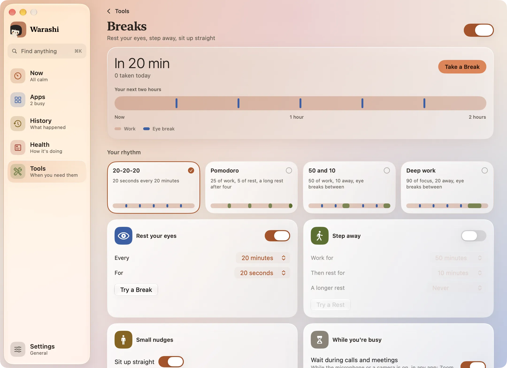
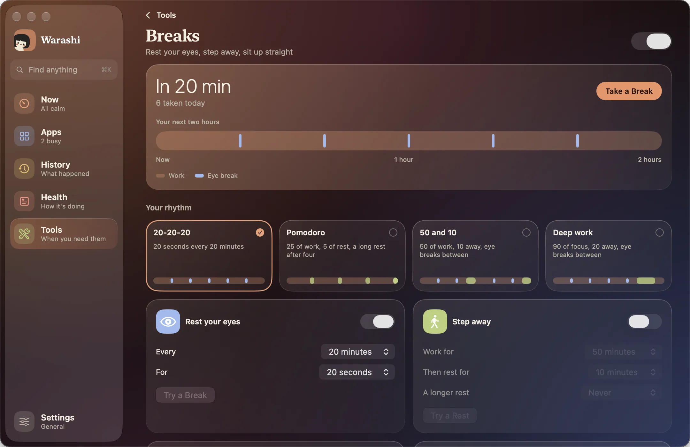

Fissare uno schermo per ore stanca occhi e schiena. Pause ti ricorda di distogliere lo sguardo ogni tanto, di alzarti con un ritmo adatto a te e aspetta con garbo quando sei occupato. È disattivato finché non lo attivi.
- Apri Pause
Fai clic sulla scheda Pause in Strumenti, oppure su Apri Pause in Impostazioni › Pause. Attivala con l'interruttore in alto. In cima alla pagina: quando è la tua prossima pausa e Le tue prossime due ore, una barra con lavoro, pause per gli occhi e riposi a partire da dove sono ora i tuoi timer.


- Scegli un ritmo
Fai clic su una delle quattro schede sotto Il tuo ritmo, ognuna con una piccola barra del suo schema: 20-20-20 (quella predefinita: ogni 20 minuti, guarda lontano per 20 secondi), Pomodoro (25 minuti di lavoro, 5 di riposo e 15 dopo ogni quarto), 50 e 10 e Lavoro profondo (90 minuti, poi 20). Cambia qualsiasi cosa sotto e diventa Personalizzato.
- Oppure imposta il tuo
Nei riquadri sotto: le Pause per gli occhi arrivano Ogni 5-60 minuti, Per 10-60 secondi. I Riposi ti allontanano dallo schermo: Lavora per 15-120 minuti, Poi riposa per 2-30 e, se vuoi, Un riposo più lungo ogni 2-5 riposi. Prova una pausa e Prova un riposo te ne mostrano una subito.
- Prima un avvertimento
Quindici secondi prima di una pausa, una piccola pillola sotto la barra dei menu dice Pausa tra 0:15, con Inizia ora, +5 min e Salta. Ogni pulsante si illumina sotto il puntatore.
- Fai la pausa
La pausa sfoca ogni display dietro un lento bagliore di colore che pulsa, con un conto alla rovescia e un semplice “Stacca gli occhi dallo schermo.” (per un riposo, “Allontanati dal Mac.”) sopra un suggerimento, per esempio “Guarda qualcosa di lontano.” Con Riduci movimento attivo, il bagliore resta fermo. Un dolce suono ti avvisa quando è finita. Salta, o Esc, la termina prima.
Piccoli inviti
Tra una pausa e l'altra, piccoli momenti di circa quattro secondi che non intercettano i tuoi clic. Raddrizza la schiena sale dal fondo del display principale fino al centro mentre la sua piccola figura si raddrizza, così gli occhi, e la testa, la seguono verso l'alto (ogni 30 minuti per impostazione predefinita, oppure ogni 5-90). Gli altri crescono dalla tacca, ognuno con un piccolo disegno che fa ciò che chiede, e sono disattivati finché non li attivi:
- Ammicca: un occhio che ammicca due volte. Ogni 5-30 minuti.
- Stiramento: le braccia in alto sopra la testa. Ogni 30 minuti-2 ore.
- Bevi un po' d'acqua: un bicchiere si riempie. Ogni 30 minuti-2 ore.
- Rilassa la mascella: un viso contratto si distende. Ogni 15-60 minuti.
Quando due sono dovute insieme, la seconda aspetta due minuti, così non si accumulano mai.
Come si combinano riposi e pause per gli occhi
- Una pausa per gli occhi in scadenza entro cinque minuti da un riposo viene saltata: il riposo la copre. Un riposo fa anche ripartire i timer della pausa per gli occhi, di Raddrizzati, Stiramento e Bevi un po' d'acqua.
- Stare lontano dal Mac per tutto il tempo di un riposo vale come quel riposo.
- Lo stop o il blocco dello schermo fa ripartire il timer di lavoro, ma Pomodoro ricorda quanti riposi hai fatto.
Aspetta mentre sei occupato
- Una pausa in scadenza aspetta durante chiamate e riunioni in qualsiasi app: mentre una fotocamera è accesa, o mentre un'app ascolta e parla insieme, come fa ogni chiamata. La dettatura (Wispr Flow, dettatura di macOS) ascolta soltanto, quindi non trattiene mai una pausa (disattiva Aspetta durante chiamate e riunioni per far arrivare le pause comunque), e mentre un gioco a schermo intero è in primo piano. Aspetta anche mentre un'altra app tiene lo schermo acceso, come un video o una presentazione, per al massimo 10 minuti (un browser può tenere lo schermo acceso per un clip in pausa o senza audio), a meno che tu non disattivi Aspetta mentre un video è in riproduzione. Una volta che il conto alla rovescia è visibile, lo ferma solo una fotocamera. Strumenti mostra In attesa.
- Una volta mostrato l'avviso di 15 secondi, la pausa mantiene la promessa: conta alla rovescia fino a zero e solo una chiamata ancora in corso in quel momento la trattiene.
- Il tempo lontano conta: cinque minuti lontano da tastiera e mouse, lo stop o il blocco dello schermo fanno ripartire il timer della pausa per gli occhi.
- Warashi lo controlla solo nel momento in cui una pausa è dovuta, non ne registra nulla e non richiede permessi.
Orario di lavoro
Attiva Orario di lavoro nella pagina Pause, scegli i giorni e imposta Dalle e Alle. Fuori da quegli orari, pause e inviti restano in silenzio, e il riquadro Pause dice quando tornano. Gli orari possono superare la mezzanotte, per un turno di notte. Ripartire conta come un nuovo inizio, come dopo lo stop.
Durante un Focus
Le pause possono aspettare mentre è attivo un Focus, come Non disturbare o Lavoro. In Impostazioni di Sistema › Focus, scegli il Focus, aggiungi Warashi sotto Filtri del Focus e attiva Metti in pausa le pause e i promemoria. Apri le impostazioni Focus nella pagina Pause ti ci porta. Non serve alcun permesso: è macOS a dire a Warashi quando quel Focus inizia e finisce.
Avviane una tu
Premi Pausa nella finestra della barra dei menu o nella tacca, Fai una pausa in Strumenti, oppure attiva Avvia una pausa con ⌃⌥⌘B nella pagina Pause. Questa scorciatoia funziona anche con i promemoria disattivati; premila di nuovo per terminare la pausa.